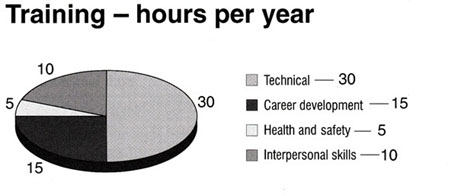
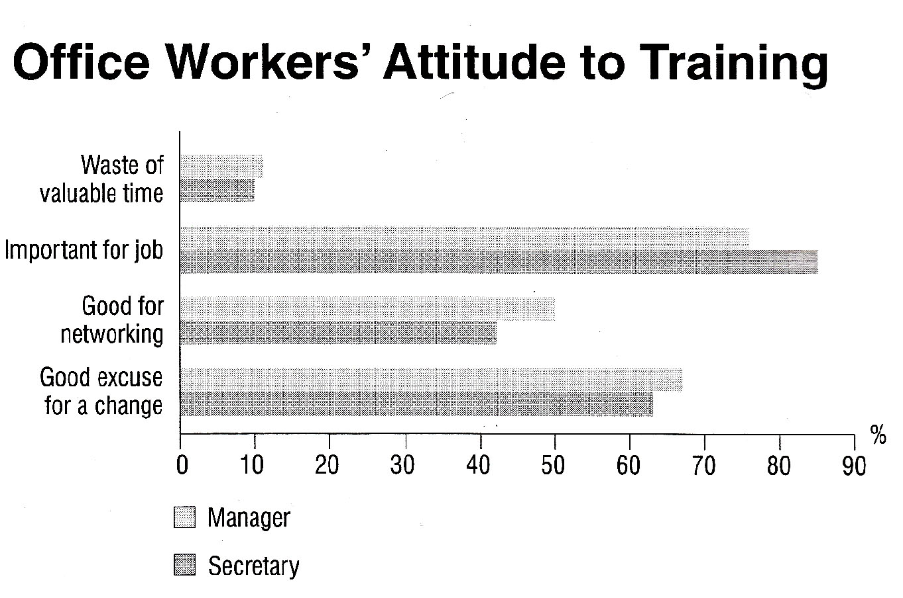

<!-- 원본: ACADEMIC7/writing (레거시 서버에서 2026-11-14 수집, 정답 제거) -->
<div class="legacy-content"><div id="pageContainer">
<div class="page" id="page-0">
<div class="flex flex-col md:flex-row gap-6">
<div class="w-full md:w-1/2">
<h3 class="text-2xl font-bold text-purple-800 mb-4">WRITING TASK 1</h3>
<br/>
<p><i>You should spend about 20 minutes on this task.</i></p>
<br/>
<p style="width:600px">
<b>
                                        The graph and pie chart below give information on in-house training courses in a
                                        large financial company.<br/>
<br/>
                                        Summarise the information by selecting and reporting the main features, and make
                                        comparisons where relevant.
                                    </b>
</p>
<br/>
<p style="width:600px">
                                    You should write at least 150 words.
                                </p>
<div style="width:800px; text-align: center; text-indent: 100px;">


</div>
</div>
<div class="w-full md:w-1/2">
<textarea class="notebook-textarea w-full wc" name="task1" placeholder="Write your answer here..." rows="15"></textarea>
<p class="text-purple-700 mt-2">Word Count: <span class="wc-out">0</span></p>
</div>
</div>
</div>
<div class="page" id="page-1">
<div class="flex flex-col md:flex-row gap-6">
<div class="w-full md:w-1/2">
<h3 class="text-2xl font-bold text-purple-800 mb-4">WRITING TASK 2</h3>
<br/>
<p style="width:600px">
</p><p><i>You should spend about 40 minutes on this task.</i></p>
<p>Write about the following topic:</p>
<p style="width:600px">
                                    p&gt;<i>You should spend about 40 minutes on this task.</i></p><br/>
<p>Write about the following topic:</p>
<br/>
<p><b>To be labelled a ‘Work of Art’, a painting, sculpture or other art form should
                                        display
                                        certain<br/> qualities that are unique. However, over the past century there has
                                        been
                                        a
                                        decline in the<br/> quality of prize-winning artwork and it is now possible for
                                        quite
                                        ordinary pieces of art to be<br/>labeled ‘masterpieces’ whilst true works of art
                                        pass
                                        unnoticed.</b>
<br/>
<b>Do you agree or disagree?</b>
</p>
<br/>
<p>Give reasons for your answer and include any relevant examples from your own
                                    knowledge or
                                    experience.</p><br/>
<p>
                                    You should write at least 250 words.
                                </p>
</div>
<div class="w-full md:w-1/2">
<textarea class="notebook-textarea w-full wc" name="task2" placeholder="Write your answer here..." rows="15"></textarea>
<p class="text-purple-700 mt-2">Word Count: <span class="wc-out">0</span></p>
</div>
</div>
</div>
<div class="flex justify-center gap-4 mt-6">
</div></div></div>
